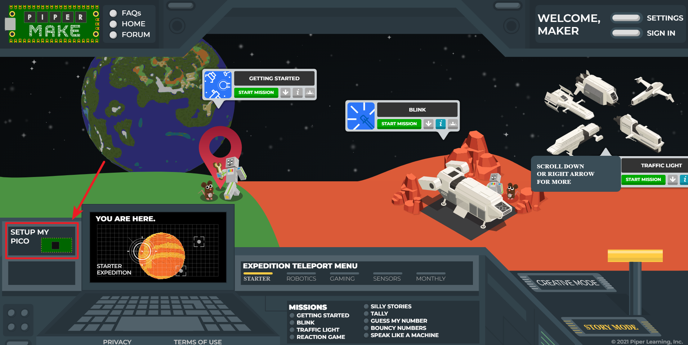
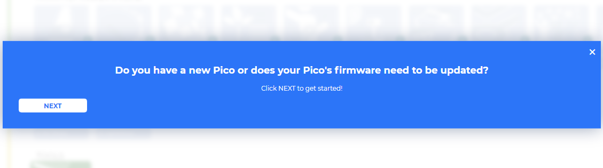
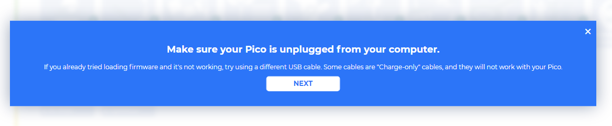
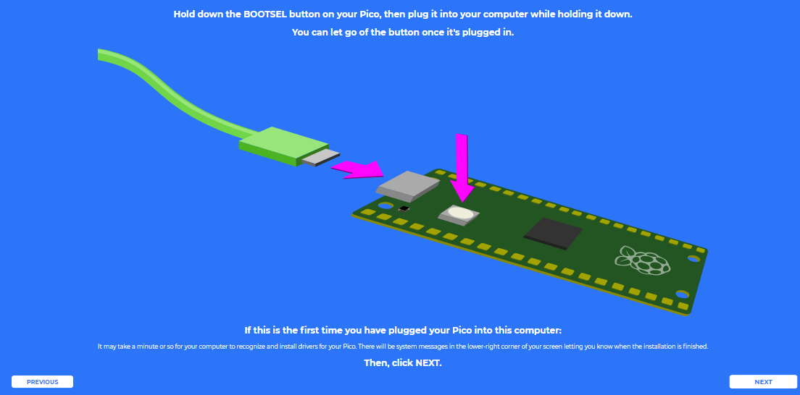
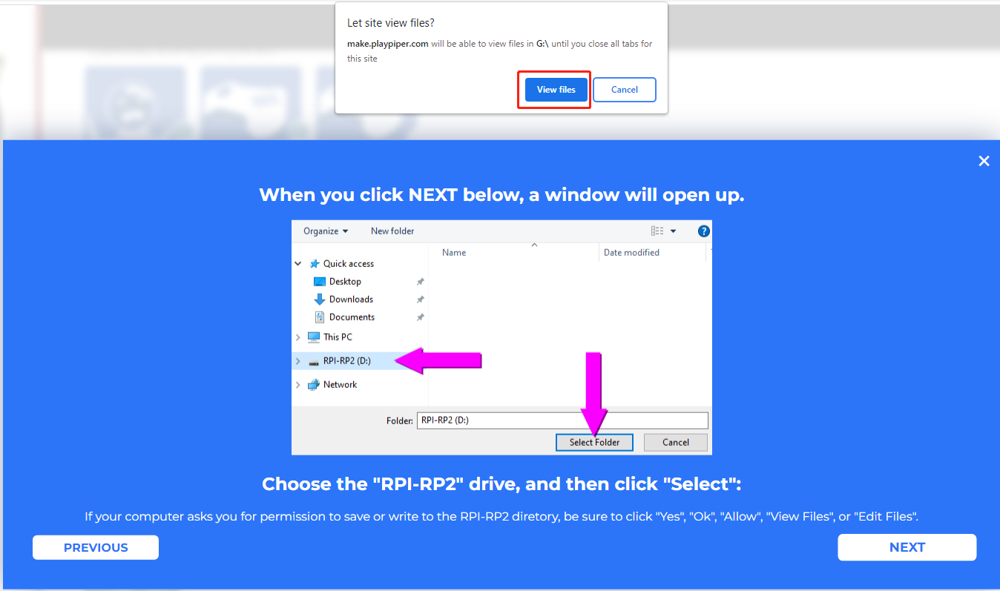
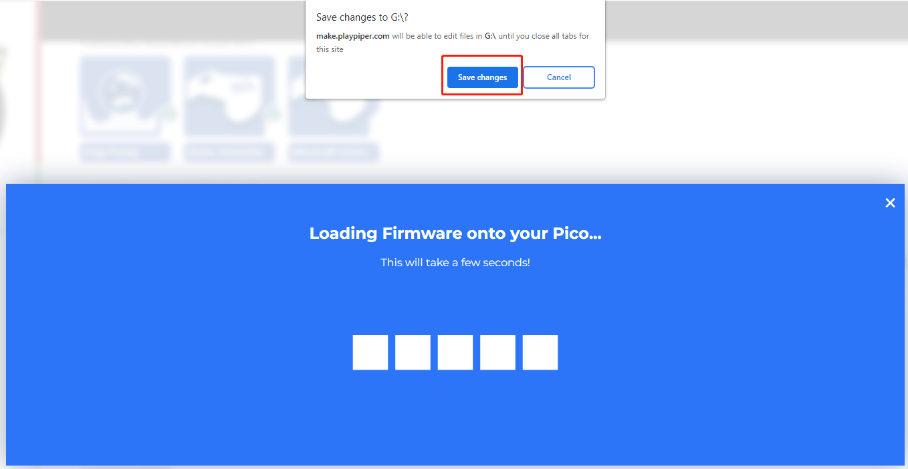

Note
Hello, welcome to the SunFounder Raspberry Pi & Arduino & ESP32 Enthusiasts Community on Facebook! Dive deeper into Raspberry Pi, Arduino, and ESP32 with fellow enthusiasts.
Why Join?
Expert Support: Solve post-sale issues and technical challenges with help from our community and team.
Learn & Share: Exchange tips and tutorials to enhance your skills.
Exclusive Previews: Get early access to new product announcements and sneak peeks.
Special Discounts: Enjoy exclusive discounts on our newest products.
Festive Promotions and Giveaways: Take part in giveaways and holiday promotions.
👉 Ready to explore and create with us? Click [here] and join today!
1.1 Set up the Pico¶
First, visit Piper Make through the following link：
In the pop-up page, if you don’t need to subscribe for more tutorials, you can just click Let’s Go! or the x button.

Note
If you see a different pop-up window, your browser version is not supported, please update your browser and try again.
Find the SETUP MY PICO button, click it, and follow the prompts to configure it.

Click Next to start configuring your Pico, even if you have set it up before, these are the same steps you will use to update your Pico firmware.

In this step, you need to make sure that your Pico is unplugged from your computer, as it needs to be plugged in in a specific way in the next step. Make sure your cable can handle power and data, as many micro USB cables only have power.

Now, press and hold the RST (white) button on the Pico and plug the Pico into your computer. Once plugged in, you can release the button.

Your Pico will appear as a USB drive, click Next after that select RPI-RP2 drive.
Note
After select RPI-RP2 drive, there will be a pop up window at the top that you need to allow the web page to view files.

Now Piper Make will load the firmware to your Pico, again you need to allow save changes to the hard drive where the Pico is located.

When this prompt appears, it means your Pico is set up and you can start using it.